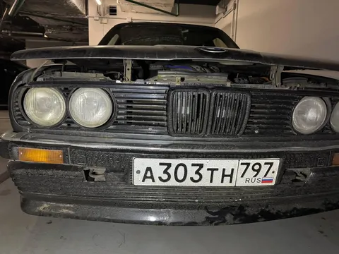
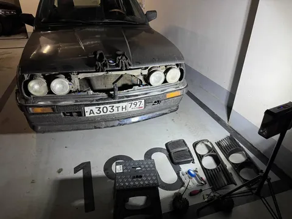
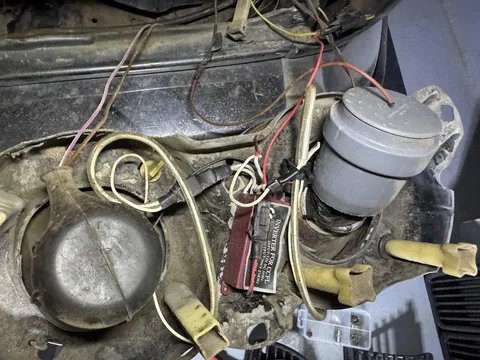
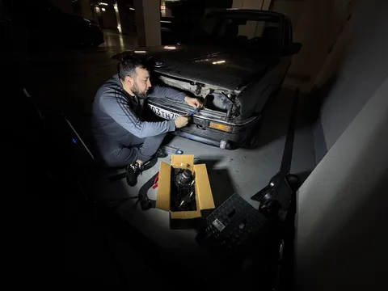
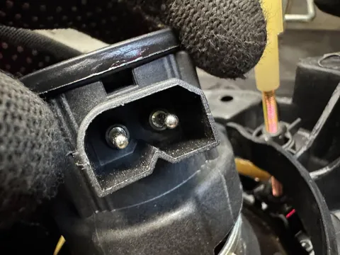
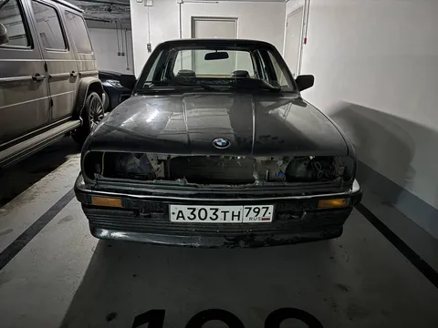

В прошлой серии было про задние фонари, но передние еще сильнее просились под замену. Почти кричали своими надписями "сделано в России", потому что часть компонентов были позаимствованы то ли у 2106, то ли у нивы, то ли у уазика. Плюс там были приколхожены какие-то неуместные "ангельские глазки" и лишние туманки за ноздрями. Вообще не тот подход. Посему были заказаны новые фары "под оригинал", а-ля Hella Black.
Сняли ноздри, очки, открутили фары, а там - мама дорогая - месиво проводов на скрутках, спайках и изоленте. Куча лишней проводки, какие-то посторонние реле для сигналки, какие-то провода брошены сразу на контакт лампочки, где-то роль патрона выполняет сантехническая труба. И ни одной фишки. А новые фары то, по штату, должны подключаться тремя фишками. Быстро стало понятно, что тут вам не плаг-н-плей.
Полез искать фишки - а с ними натуральный дефицит. Ждать долго, замен нет, на досках нет. И даже когда часть фишек до меня доехала, обнаружился еще один ошеломляющий нюанс - фишки приходят пустые. Без контактной группы. Просто голый пластиковый разъем. А вот проводки с мама-разъемами нужно искать отдельно. И вот их уже вообще почти не найти. Даже в европе (сербский бмв-чат пытался помочь, но тщетно)! Спас случай - на просторах авито нашлось объявление "какая-то проводка на какую-то бмв", где на фото была рандомная некатегоризированная рассыпуха, среди которой я заметил нужные проводочки. Хоть и в весьма грустном состоянии.
Что было дальше - расскажу в следующий раз. Машина надолго осталась "без лица". Но ничего, сдюжим! А пока еще отмечу интересный кейс. После начала проекта #лёха_строит_бэху мне иногда писали подписчики с шуточной просьбой их тоже усыновить. Но в каждой шутке - лишь доля шутки, и один из подписчиков на серьезном предложил вписаться в проект - просто приехать и помочь что-то поковырять, благо он тоже бмвшник-некровод. В общем, спасибо Азату за помощь - вместе и быстрее, и веселее!
